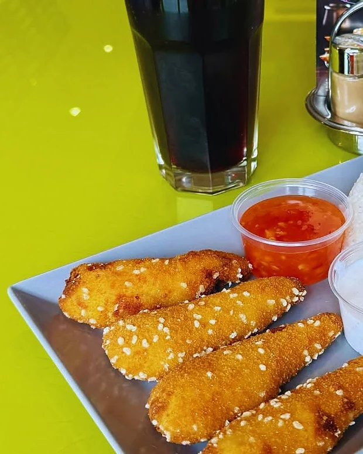
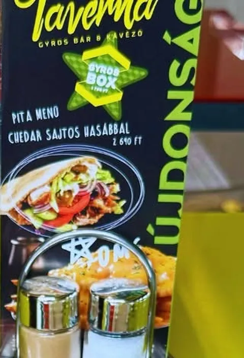

H–Szo 11:00–21:00 · telefonos rendelés 20:30-ig
Gyros és burger, rendelésre készítve.
Taverna Gyros bár és kávézó a Móricz Zsigmond utcában, Monoron. Frissensültek, tálak és Pellini kávé — helyben, elvitelre, vagy házhoz Monoron és tíz környező településen.

A pultról, ahogy kijön.
Három tányér a Taverna saját fotóiról, úgy, ahogy a vendég elé kerül.



* Az árak a korábbi étlapról származnak, még nincsenek ellenőrizve. A pultnál érvényes ár az irányadó.

Asztal a teraszon, kávé a pultnál.
A Taverna gyrosbár és kávézó egyben: aki siet, a pultnál viszi a pitáját, aki ráér, kiül a terasz napernyői alá egy limonádéval vagy egy Pellini kávéval.
- Ülőhely
- Bent és a szabadtéri teraszon
- Kávé
- Pellini — espresso, cappuccino, latte, jeges kávé
- Rendelés
- Helyben, elvitelre, házhoz; telefonon 20:30-ig
- Fizetés
- Készpénz, bankkártya, SZÉP-kártya (OTP, K&H, MBH)

Közelről.


Fotók a Tavernából.
Nyolc kép a Taverna saját anyagából. Koppints bármelyikre a teljes mérethez.
Házhoz visszük, Monoron és tíz szomszéd faluban.
- Monor3 500 Ft feletti rendelésnél a kiszállítás ingyenes.
- Környező településekA szállítási díjat és a minimum rendelést telefonon egyeztetjük.
- RendelésfelvételHétfőtől szombatig 20:30-ig, telefonon.
- Monor
- Monorierdő
- Pilis
- Gyömrő
- Vasad
- Csévharaszt
- Péteri
- Gomba
- Nyáregyháza
- Bénye
- Üllő

Az asztali kártyáról.
Amit a Taverna saját fotóin újdonságként hirdet. A napi menü és a friss ajánlatok a Facebook-oldalon jelennek meg.
- Gyros BoxÚjdonságként jelölve. Gyros hús, tzatziki, pikáns saláta és hasábburgonya egy dobozban.
- Pita menü cheddar sajtos hasábbalA kártyán 2 690 Ft.
- Csavart fagyiKicsi 890 Ft, nagy 1 190 Ft — a bejárati krétatábla szerint.
Móricz Zsigmond utca 39.
Taverna Gyros Bár és Kávézó
2200 Monor
| Hétfő | 11:00–21:00 |
|---|---|
| Kedd | 11:00–21:00 |
| Szerda | 11:00–21:00 |
| Csütörtök | 11:00–21:00 |
| Péntek | 11:00–21:00 |
| Szombat | 11:00–21:00 |
| Vasárnap | Zárva |
Telefonos rendelésfelvétel zárás előtt fél órával, 20:30-ig.
2200 Monor, Móricz Zsigmond u. 39.
Megnyitás a Google Térképen